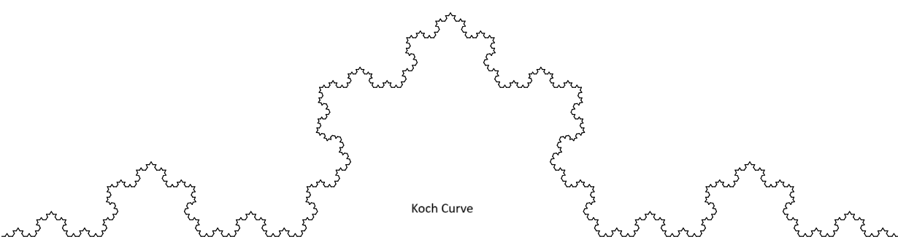
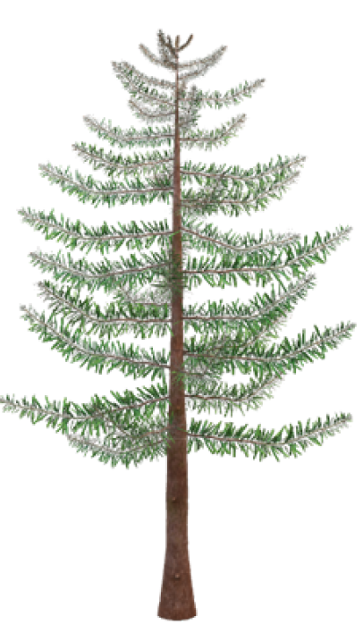

# Data access
url_las <- "https://cloud.hawk.de/index.php/s/pB4RRmLb4Xxy4Qj/download"
download.file(url_las, destfile = "data/uls_goewa.laz", mode = "wb")Measuring Tree/Forest Structural Complexity with (Fractal) Box Dimension \((D_b)\) from 3D Point Clouds
Introduction
Clouds are not spheres, mountains are not cones, coastlines are not circles, and bark is not smooth, nor does lightning travel in a straight line.” - Mandelbrot (1983)
A fractal is a geometric object that shows self-similarity; its parts resemble the whole, no matter the scale of observation. Imagine zooming in on a fern leaf, a coastline, or a broccoli head: at each magnification, similar patterns reappear. Unlike simple geometric figures, fractals are irregular and infinitely nested in structure. They are found widely in nature and are best described not by whole-number dimensions (like 1D lines or 2D surfaces), but by fractional, non-integer dimensions, known as the fractal dimension. This dimension is crucial for quantifying the complexity of self-similar systems, whether exact (mathematical fractals) or statistical (natural systems).


How do you measure the fractal dimension?
The fractal dimension quantifies how complex and space-filling a pattern is. Unlike familiar Euclidean dimensions (1D for a line, 2D for a surface), fractal dimensions can take non-integer values between whole numbers.
Several methods exist to estimate fractal dimension, but the box-counting method is the most widely used. In this approach, the object is covered with boxes of a certain size, and the number of boxes required to contain the shape is counted. This process is repeated with progressively smaller boxes.
If the logarithm of the number of boxes is plotted against the logarithm of the box size, the result is typically a straight line. The slope of this line gives the fractal dimension: steeper slopes correspond to more intricate, space-filling structures.
Why are we discussing this here?
Because trees are fractal structures.

Trees exhibit self-similar branching patterns: smaller branches resemble the overall structure of the tree. While we can measure conventional forestry attributes such as height, DBH, basal area, crown dimensions, and volume, these do not capture overall structural complexity. To do this, we turn to fractal analysis—specifically the box dimension.
From Euclidean to Fractal Dimension (Quick Intuition)
- 0-D: point
- 1-D: line
- 2-D: plane/filled region
- 3-D: solid volume
- Fractal dimension fills the gaps between integers and quantifies how space-filling a structure is.
A classic example is the Menger sponge, which has a box dimension ≈ 2.7268. Despite its infinite surface area, it has zero volume, an extreme case of fractal geometry.
Box Dimension
The box dimension is a method of fractal analysis used to quantify the structural complexity of an object, often derived from 3D point cloud data. The idea is simple:
- Cover the object with boxes of decreasing size.
- Count how many boxes are required to contain the shape.
- Plot the logarithm of the box count against the logarithm of box size.
If the relationship is linear, the slope of that line gives the box dimension.

Formally, if the box size is \((\varepsilon)\) and the number of occupied boxes is \(N(\varepsilon)\):
\[ N(\varepsilon) \propto \varepsilon^{-D_b} \quad\Rightarrow\quad \log N(\varepsilon) = D_b \,\log(1/\varepsilon) + c \]
Where: - \((D_b)\) is the box dimension.
- For 3D point clouds:
- \((D_b \approx 1)\): line-like structures
- \((D_b \approx 2)\): sheet-like structures
- \((D_b \approx 3)\): volume-filling structures
- Trees typically have \((D_b)\) between 1.0 and 2.2 (method and data dependent).
- A higher \(R^2\) of the fit indicates stronger self-similarity across scales.
Data sensitivities
Box dimension estimates depend on: 1. Point density/resolution
2. Occlusion or shadowing
3. Extent of the scanned scene
4. Scale interval chosen for fitting
High-quality point clouds (low occlusion, ~0–1 cm spacing) are optimal for robust estimates.
Box Dimension vs. Voxel Counting
In practice, box-counting in 3D is implemented as voxel counting. Voxels are the 3D equivalent of pixels, small cubic volume elements. A point cloud is discretized into a voxel grid, and the occupied voxels are counted at multiple scales.

This process converts a 3D model or point cloud into a grid of voxels, each labeled as “occupied” or “empty.”

Interpretation
- Box dimension ranges from 1 (line) to 3 (solid cube).
- A dimension of 2.72 corresponds to the Menger sponge (infinite surface, zero volume).
- Most trees fall between 1.0 and 2.2, reflecting their branching complexity.
- Low resolution → oversimplification (underestimates (\(D_b\))).
- High occlusion → too few boxes at small scales (also biases (\(D_b\))).
Thus, careful preprocessing and high-quality scans are critical for meaningful box-dimension analysis.
How to measure it in reality?
To apply this concept to forests, we calculate the box-dimension (\((D_b\)) as a measure of tree or stand structural complexity using the rTwig package in R.
The algorithm for \((D_b)\) was developed initially in Mathematica (Wolfram Research, Champaign, IL, USA) (Seidel, 2018; Ehbrecht, 2019; Basnet, 2025). It integrates all elements of a scanned scene into a single value, thereby fully leveraging the potential of 3D laser scanning.
In short:
- The point cloud of a tree or stand is enclosed in boxes of decreasing size.
- For each box size, the number of occupied boxes is counted.
- The scaling relationship between box size and number of boxes gives the box dimension $(D_b$).
This workflow is implemented in the rTwig R package, making it straightforward to estimate structural complexity directly from normalized point cloud data.
rTwig R package
The rTwig package provides the function box_dimension() to calculate the fractal box dimension ($(D_b$)) from a 3D point cloud.
Usage
box_dimension(cloud, lowercutoff = 0.01, rm_int_box = FALSE, plot = FALSE)Arguments
cloud: A point cloud matrix n*3 (X, Y, Z). Non-matrices are automatically converted to a matrix
lowercutoff: The smallest box size determined by the point scaping of the cloud in meters. Defaults to 1 cm
rm_int_box: Logical, whether to remove the initial (largest) box from the fit. Defaults to FALSE.
plot: Visualization options: “2D”, “3D”, or “ALL”. FALSE disables plotting. Default is FALSE.
Practical Demonstration
We use the same ULS Lidar dataset as in the previous workshop which can be download using the following link.
Important preprocessing step: Before running box_dimension(), ensure that the point cloud is:
In XYZ matrix format.
Normalized to ground, meaning the minimum ground 𝑍-value is set to 0.
This can be verified with the las_check() function in lidR, as shown below.
Attache Paket: 'dplyr'Die folgenden Objekte sind maskiert von 'package:stats':
filter, lagDie folgenden Objekte sind maskiert von 'package:base':
intersect, setdiff, setequal, unionPackage 'rTwig' version 1.4.0
Type 'citation("rTwig")' for citing this R package in publications.
Attache Paket: 'rTwig'Das folgende Objekt ist maskiert 'package:lidR':
tree_metrics
[=======================================> ] 78% ETA: 0s
[=======================================> ] 78% ETA: 0s
[=======================================> ] 78% ETA: 0s
[=======================================> ] 78% ETA: 0s
[=======================================> ] 79% ETA: 0s
[=======================================> ] 79% ETA: 0s
[=======================================> ] 79% ETA: 0s
[=======================================> ] 79% ETA: 0s
[=======================================> ] 79% ETA: 0s
[=======================================> ] 79% ETA: 0s
[========================================> ] 80% ETA: 0s
[========================================> ] 80% ETA: 0s
[========================================> ] 80% ETA: 0s
[========================================> ] 80% ETA: 0s
[========================================> ] 80% ETA: 0s
[========================================> ] 81% ETA: 0s
[========================================> ] 81% ETA: 0s
[========================================> ] 81% ETA: 0s
[========================================> ] 81% ETA: 0s
[========================================> ] 81% ETA: 0s
[=========================================> ] 82% ETA: 0s
[=========================================> ] 82% ETA: 0s
[=========================================> ] 82% ETA: 0s
[=========================================> ] 82% ETA: 0s
[=========================================> ] 82% ETA: 0s
[=========================================> ] 82% ETA: 0s
[=========================================> ] 83% ETA: 0s
[=========================================> ] 83% ETA: 0s
[=========================================> ] 83% ETA: 0s
[=========================================> ] 83% ETA: 0s
[=========================================> ] 83% ETA: 0s
[==========================================> ] 84% ETA: 0s
[==========================================> ] 84% ETA: 0s
[==========================================> ] 84% ETA: 0s
[==========================================> ] 84% ETA: 0s
[==========================================> ] 84% ETA: 0s
[==========================================> ] 85% ETA: 0s
[==========================================> ] 85% ETA: 0s
[==========================================> ] 85% ETA: 0s
[==========================================> ] 85% ETA: 0s
[==========================================> ] 85% ETA: 0s
[===========================================> ] 86% ETA: 0s
[===========================================> ] 86% ETA: 0s
[===========================================> ] 86% ETA: 0s
[===========================================> ] 86% ETA: 0s
[===========================================> ] 86% ETA: 0s
[===========================================> ] 86% ETA: 0s
[===========================================> ] 87% ETA: 0s
[===========================================> ] 87% ETA: 0s
[===========================================> ] 87% ETA: 0s
[===========================================> ] 87% ETA: 0s
[===========================================> ] 87% ETA: 0s
[============================================> ] 88% ETA: 0s
[============================================> ] 88% ETA: 0s
[============================================> ] 88% ETA: 0s
[============================================> ] 88% ETA: 0s
[============================================> ] 88% ETA: 0s
[============================================> ] 89% ETA: 0s
[============================================> ] 89% ETA: 0s
[============================================> ] 89% ETA: 0s
[============================================> ] 89% ETA: 0s
[============================================> ] 89% ETA: 0s
[=============================================> ] 90% ETA: 0s
[=============================================> ] 90% ETA: 0s
[=============================================> ] 90% ETA: 0s
[=============================================> ] 90% ETA: 0s
[=============================================> ] 90% ETA: 0s
[=============================================> ] 90% ETA: 0s
[=============================================> ] 91% ETA: 0s
[=============================================> ] 91% ETA: 0s
[=============================================> ] 91% ETA: 0s
[=============================================> ] 91% ETA: 0s
[=============================================> ] 91% ETA: 0s
[==============================================> ] 92% ETA: 0s
[==============================================> ] 92% ETA: 0s
[==============================================> ] 92% ETA: 0s
[==============================================> ] 92% ETA: 0s
[==============================================> ] 92% ETA: 0s
[==============================================> ] 93% ETA: 0s
[==============================================> ] 93% ETA: 0s
[==============================================> ] 93% ETA: 0s
[==============================================> ] 93% ETA: 0s
[==============================================> ] 93% ETA: 0s
[==============================================> ] 93% ETA: 0s
[===============================================> ] 94% ETA: 0s
[===============================================> ] 94% ETA: 0s
[===============================================> ] 94% ETA: 0s
[===============================================> ] 94% ETA: 0s
[===============================================> ] 94% ETA: 0s
[===============================================> ] 95% ETA: 0s
[===============================================> ] 95% ETA: 0s
[===============================================> ] 95% ETA: 0s
[===============================================> ] 95% ETA: 0s
[===============================================> ] 95% ETA: 0s
[================================================> ] 96% ETA: 0s
[================================================> ] 96% ETA: 0s
[================================================> ] 96% ETA: 0s
[================================================> ] 96% ETA: 0s
[================================================> ] 96% ETA: 0s
[================================================> ] 97% ETA: 0s
[================================================> ] 97% ETA: 0s
This function reports whether ground classification and normalization have been applied, which is critical for meaningful box-dimension analysis.
print(data)class : LAS (v1.2 format 3)
memory : 313.2 Mb
extent : 572445.4, 572496.1, 5709020, 5709071 (xmin, xmax, ymin, ymax)
coord. ref. : WGS 84 / UTM zone 32N
area : 2602 m²
points : 5.13 million points
type : terrestrial
density : 1971.94 points/m²
density : 1660.17 pulses/m²las_check(data)
Checking the data
- Checking coordinates...[0;32m ✓[0m
- Checking coordinates type...[0;32m ✓[0m
- Checking coordinates range...[0;32m ✓[0m
- Checking coordinates quantization...[0;32m ✓[0m
- Checking attributes type...[0;32m ✓[0m
- Checking ReturnNumber validity...[0;32m ✓[0m
- Checking NumberOfReturns validity...[0;32m ✓[0m
- Checking ReturnNumber vs. NumberOfReturns...[0;32m ✓[0m
- Checking RGB validity...[0;32m ✓[0m
- Checking absence of NAs...[0;32m ✓[0m
- Checking duplicated points...[0;32m ✓[0m
- Checking degenerated ground points...[0;32m ✓[0m
- Checking attribute population...
[0;32m 🛈 'PointSourceID' attribute is not populated[0m
[0;32m 🛈 'ScanDirectionFlag' attribute is not populated[0m
[0;32m 🛈 'EdgeOfFlightline' attribute is not populated[0m
- Checking gpstime incoherances[0;32m ✓[0m
- Checking flag attributes...[0;32m ✓[0m
- Checking user data attribute...[0;32m ✓[0m
Checking the header
- Checking header completeness...[0;32m ✓[0m
- Checking scale factor validity...[0;32m ✓[0m
- Checking point data format ID validity...[0;32m ✓[0m
- Checking extra bytes attributes validity...[0;32m ✓[0m
- Checking the bounding box validity...[0;32m ✓[0m
- Checking coordinate reference system...[0;32m ✓[0m
Checking header vs data adequacy
- Checking attributes vs. point format...[0;32m ✓[0m
- Checking header bbox vs. actual content...[0;32m ✓[0m
- Checking header number of points vs. actual content...[0;32m ✓[0m
- Checking header return number vs. actual content...[0;32m ✓[0m
Checking coordinate reference system...
- Checking if the CRS was understood by R...[0;32m ✓[0m
Checking preprocessing already done
- Checking ground classification...[0;32m yes[0m
- Checking normalization...[0;31m no[0m
- Checking negative outliers...[0;32m ✓[0m
- Checking flightline classification...[0;31m no[0m
Checking compression
- Checking attribute compression...
- ScanDirectionFlag is compressed
- EdgeOfFlightline is compressed
- Synthetic_flag is compressed
- Keypoint_flag is compressed
- Withheld_flag is compressed
- UserData is compressed
- PointSourceID is compressedlas <- normalize_height(las = data,
algorithm = tin(),
use_class = 2)
las_check(las)
Checking the data
- Checking coordinates...[0;32m ✓[0m
- Checking coordinates type...[0;32m ✓[0m
- Checking coordinates range...[0;32m ✓[0m
- Checking coordinates quantization...[0;32m ✓[0m
- Checking attributes type...[0;32m ✓[0m
- Checking ReturnNumber validity...[0;32m ✓[0m
- Checking NumberOfReturns validity...[0;32m ✓[0m
- Checking ReturnNumber vs. NumberOfReturns...[0;32m ✓[0m
- Checking RGB validity...[0;32m ✓[0m
- Checking absence of NAs...[0;32m ✓[0m
- Checking duplicated points...[0;32m ✓[0m
- Checking degenerated ground points...[0;32m ✓[0m
- Checking attribute population...
[0;32m 🛈 'PointSourceID' attribute is not populated[0m
[0;32m 🛈 'ScanDirectionFlag' attribute is not populated[0m
[0;32m 🛈 'EdgeOfFlightline' attribute is not populated[0m
- Checking gpstime incoherances[0;32m ✓[0m
- Checking flag attributes...[0;32m ✓[0m
- Checking user data attribute...[0;32m ✓[0m
Checking the header
- Checking header completeness...[0;32m ✓[0m
- Checking scale factor validity...[0;32m ✓[0m
- Checking point data format ID validity...[0;32m ✓[0m
- Checking extra bytes attributes validity...[0;32m ✓[0m
- Checking the bounding box validity...[0;32m ✓[0m
- Checking coordinate reference system...[0;32m ✓[0m
Checking header vs data adequacy
- Checking attributes vs. point format...[0;32m ✓[0m
- Checking header bbox vs. actual content...[0;32m ✓[0m
- Checking header number of points vs. actual content...[0;32m ✓[0m
- Checking header return number vs. actual content...[0;32m ✓[0m
Checking coordinate reference system...
- Checking if the CRS was understood by R...[0;32m ✓[0m
Checking preprocessing already done
- Checking ground classification...[0;32m yes[0m
- Checking normalization...[0;32m yes[0m
- Checking negative outliers...
[1;33m ⚠ 51 points below 0[0m
- Checking flightline classification...[0;31m no[0m
Checking compression
- Checking attribute compression...
- ScanDirectionFlag is compressed
- EdgeOfFlightline is compressed
- Synthetic_flag is compressed
- Keypoint_flag is compressed
- Withheld_flag is compressed
- UserData is compressed
- PointSourceID is compressed#view(las)
las@data[Z<0, ] # Here, options are either to remove all or assign all to 0; however... X Y Z gpstime Intensity ReturnNumber NumberOfReturns
<num> <num> <num> <num> <int> <int> <int>
1: 572471.7 5709038 -0.0183 437809548 0 2 2
2: 572469.0 5709021 -0.0044 437809555 0 1 1
3: 572475.5 5709041 -0.0315 437809565 0 2 2
4: 572477.3 5709041 -0.0004 437809566 58 1 1
5: 572475.2 5709040 -0.0013 437809567 0 2 2
6: 572476.9 5709041 -0.0088 437809567 0 2 2
7: 572459.1 5709064 -0.0035 437809568 70 1 1
8: 572477.3 5709041 -0.0041 437809568 0 2 2
9: 572460.3 5709058 -0.0034 437809571 69 1 1
10: 572458.5 5709062 -0.0015 437809570 0 2 2
11: 572462.5 5709046 -0.1952 437809581 0 2 2
12: 572480.8 5709064 -0.0056 437809627 0 2 2
13: 572483.4 5709069 -0.0163 437809628 0 2 2
14: 572483.8 5709068 -0.0514 437809631 0 2 2
15: 572483.8 5709068 -0.0330 437809630 0 2 2
16: 572483.4 5709068 -0.0129 437809630 0 2 2
17: 572488.9 5709023 -0.0133 437809633 0 2 2
18: 572476.2 5709047 -0.0031 437809633 0 2 2
19: 572451.9 5709020 -0.0029 437809636 0 2 2
20: 572483.6 5709068 -0.0488 437809637 0 2 2
21: 572484.9 5709062 -0.0040 437809640 0 2 2
22: 572452.1 5709020 -0.0102 437809640 0 2 2
23: 572452.0 5709021 -0.0030 437809641 0 2 2
24: 572488.8 5709054 -0.0037 437809643 0 2 2
25: 572476.1 5709032 -0.0070 437809642 0 2 2
26: 572452.2 5709020 -0.0227 437809643 0 2 2
27: 572491.1 5709069 -0.0163 437809648 37 1 1
28: 572488.9 5709023 -0.0496 437809652 0 2 2
29: 572483.9 5709068 -0.0246 437810815 27 1 1
30: 572483.4 5709068 -0.0099 437810815 30 1 1
31: 572484.7 5709063 -0.0017 437810815 0 2 2
32: 572477.9 5709064 -0.0101 437810819 39 1 1
33: 572478.2 5709065 -0.0129 437810819 33 1 1
34: 572482.9 5709060 -0.0112 437810819 54 1 1
35: 572494.0 5709053 -0.0001 437810823 31 1 1
36: 572491.3 5709055 -0.0017 437810823 48 1 1
37: 572476.1 5709047 -0.0046 437810824 0 2 2
38: 572475.6 5709050 -0.0004 437810828 59 1 1
39: 572491.0 5709039 -0.0019 437810830 71 1 1
40: 572473.3 5709046 -0.0006 437810831 48 1 1
41: 572478.1 5709039 -0.0100 437810830 67 1 1
42: 572493.1 5709032 -0.0122 437810831 0 2 2
43: 572470.5 5709037 -0.0157 437810830 0 2 2
44: 572490.8 5709032 -0.0080 437810834 35 1 1
45: 572477.5 5709041 -0.0002 437810833 65 1 1
46: 572474.1 5709035 -0.0131 437810834 52 1 1
47: 572493.0 5709032 -0.0166 437810833 0 2 2
48: 572477.7 5709040 -0.0088 437810834 0 2 2
49: 572476.5 5709052 -0.0075 437810835 0 2 2
50: 572473.1 5709038 -0.0014 437810835 48 1 1
51: 572474.0 5709035 -0.0297 437810836 40 1 1
X Y Z gpstime Intensity ReturnNumber NumberOfReturns
ScanDirectionFlag EdgeOfFlightline Classification Synthetic_flag
<int> <int> <int> <lgcl>
1: 0 0 1 FALSE
2: 0 0 1 FALSE
3: 0 0 1 FALSE
4: 0 0 1 FALSE
5: 0 0 1 FALSE
6: 0 0 1 FALSE
7: 0 0 1 FALSE
8: 0 0 1 FALSE
9: 0 0 1 FALSE
10: 0 0 1 FALSE
11: 0 0 1 FALSE
12: 0 0 1 FALSE
13: 0 0 1 FALSE
14: 0 0 1 FALSE
15: 0 0 1 FALSE
16: 0 0 1 FALSE
17: 0 0 1 FALSE
18: 0 0 1 FALSE
19: 0 0 1 FALSE
20: 0 0 1 FALSE
21: 0 0 1 FALSE
22: 0 0 1 FALSE
23: 0 0 1 FALSE
24: 0 0 1 FALSE
25: 0 0 1 FALSE
26: 0 0 1 FALSE
27: 0 0 1 FALSE
28: 0 0 1 FALSE
29: 0 0 1 FALSE
30: 0 0 1 FALSE
31: 0 0 1 FALSE
32: 0 0 1 FALSE
33: 0 0 1 FALSE
34: 0 0 1 FALSE
35: 0 0 1 FALSE
36: 0 0 1 FALSE
37: 0 0 1 FALSE
38: 0 0 1 FALSE
39: 0 0 1 FALSE
40: 0 0 1 FALSE
41: 0 0 1 FALSE
42: 0 0 1 FALSE
43: 0 0 1 FALSE
44: 0 0 1 FALSE
45: 0 0 1 FALSE
46: 0 0 1 FALSE
47: 0 0 1 FALSE
48: 0 0 1 FALSE
49: 0 0 1 FALSE
50: 0 0 1 FALSE
51: 0 0 1 FALSE
ScanDirectionFlag EdgeOfFlightline Classification Synthetic_flag
Keypoint_flag Withheld_flag ScanAngleRank UserData PointSourceID R
<lgcl> <lgcl> <int> <int> <int> <int>
1: FALSE FALSE 28 0 0 2560
2: FALSE FALSE 18 0 0 23040
3: FALSE FALSE 24 0 0 44544
4: FALSE FALSE 25 0 0 43264
5: FALSE FALSE 26 0 0 3840
6: FALSE FALSE 26 0 0 36352
7: FALSE FALSE 13 0 0 14848
8: FALSE FALSE 27 0 0 37632
9: FALSE FALSE 19 0 0 3072
10: FALSE FALSE 15 0 0 2816
11: FALSE FALSE 34 0 0 31232
12: FALSE FALSE -11 0 0 44032
13: FALSE FALSE -9 0 0 36352
14: FALSE FALSE -8 0 0 3072
15: FALSE FALSE -8 0 0 3072
16: FALSE FALSE -8 0 0 8448
17: FALSE FALSE -23 0 0 18432
18: FALSE FALSE -9 0 0 3584
19: FALSE FALSE 20 0 0 21760
20: FALSE FALSE -15 0 0 3072
21: FALSE FALSE -18 0 0 10496
22: FALSE FALSE 14 0 0 20736
23: FALSE FALSE 13 0 0 38400
24: FALSE FALSE -20 0 0 8960
25: FALSE FALSE -4 0 0 35328
26: FALSE FALSE 11 0 0 23552
27: FALSE FALSE -34 0 0 25856
28: FALSE FALSE -20 0 0 0
29: FALSE FALSE -38 0 0 3328
30: FALSE FALSE -38 0 0 23552
31: FALSE FALSE -35 0 0 41728
32: FALSE FALSE -33 0 0 24064
33: FALSE FALSE -32 0 0 15360
34: FALSE FALSE -29 0 0 3584
35: FALSE FALSE -16 0 0 12032
36: FALSE FALSE -19 0 0 9984
37: FALSE FALSE -21 0 0 4352
38: FALSE FALSE -20 0 0 3840
39: FALSE FALSE -15 0 0 3072
40: FALSE FALSE -22 0 0 8192
41: FALSE FALSE -21 0 0 32256
42: FALSE FALSE -18 0 0 20480
43: FALSE FALSE -25 0 0 0
44: FALSE FALSE -24 0 0 9984
45: FALSE FALSE -23 0 0 26880
46: FALSE FALSE -27 0 0 16640
47: FALSE FALSE -21 0 0 39680
48: FALSE FALSE -25 0 0 22528
49: FALSE FALSE -22 0 0 4096
50: FALSE FALSE -28 0 0 13312
51: FALSE FALSE -29 0 0 4352
Keypoint_flag Withheld_flag ScanAngleRank UserData PointSourceID R
G B Zref
<int> <int> <num>
1: 3584 3840 419.7597
2: 27136 19712 419.9455
3: 54528 34304 419.6941
4: 50176 36096 419.7790
5: 6656 5120 419.7138
6: 44288 27392 419.7844
7: 21248 14336 419.2793
8: 47360 34048 419.7604
9: 4608 4608 419.3263
10: 3840 3584 419.3013
11: 37888 17152 419.2859
12: 49408 33792 419.2132
13: 39424 26112 419.1694
14: 4096 4608 419.1535
15: 4096 3840 419.1267
16: 12800 7680 419.1610
17: 25088 14848 420.5165
18: 4864 4864 419.6685
19: 26880 18688 419.4913
20: 3328 3840 419.1597
21: 14336 9472 419.2460
22: 24832 17920 419.4772
23: 48896 29440 419.4859
24: 11520 8960 419.6122
25: 40704 27648 419.9326
26: 30464 18176 419.4840
27: 34560 21760 419.1895
28: 0 0 420.4728
29: 3840 3584 419.1791
30: 33536 17408 419.2013
31: 50944 34048 419.2304
32: 34304 20736 419.2761
33: 22784 14080 419.2632
34: 7168 4352 419.3786
35: 17408 8704 419.7221
36: 10752 8960 419.6808
37: 5888 4608 419.6822
38: 3840 3840 419.6373
39: 4608 4352 420.0693
40: 8704 7936 419.6462
41: 42752 28416 419.7553
42: 24576 11776 420.2428
43: 0 0 419.8221
44: 8704 5376 420.1630
45: 37632 15872 419.7871
46: 22272 15104 419.9067
47: 48896 30208 420.2431
48: 30976 16384 419.7376
49: 4864 4864 419.5523
50: 17408 12544 419.7752
51: 5888 4864 419.8943
G B Zref# Forest structural complexity (Box dimension)
cloud = las@data[Z>0.5, 1:3] # Here, all points above 0.5 meter and only X,Y,z coordinates
db <- box_dimension(cloud = cloud,
lowercutoff = 0.01,
rm_int_box = FALSE,
plot = FALSE )
str(db)List of 2
$ :Classes 'tidytable', 'tbl', 'data.table' and 'data.frame': 13 obs. of 2 variables:
..$ log.box.size: num [1:13] 0 0.693 1.386 2.079 2.773 ...
..$ log.voxels : num [1:13] 1.39 2.89 4.32 6.04 7.56 ...
..- attr(*, ".internal.selfref")=<externalptr>
$ :Classes 'tidytable', 'tbl', 'data.table' and 'data.frame': 1 obs. of 4 variables:
..$ r.squared : num 0.964
..$ adj.r.squared: num 0.96
..$ intercept : num 2.24
..$ slope : num 1.84# Box Dimension (slope)
db[[2]]$slope[1] 1.838747db[[2]]$r.squared # show similarity[1] 0.9636752# Visualization
# 2D Plot
box_dimension(las@data[, 1:3], plot = "2D")
[[1]]
# A tidytable: 13 × 2
log.box.size log.voxels
<dbl> <dbl>
1 0 1.95
2 0.693 3.18
3 1.39 4.51
4 2.08 6.12
5 2.77 7.65
6 3.47 9.21
7 4.16 10.7
8 4.85 12.2
9 5.55 13.7
10 6.24 14.8
11 6.93 15.3
12 7.62 15.4
13 8.32 15.4
[[2]]
# A tidytable: 1 × 4
r.squared adj.r.squared intercept slope
<dbl> <dbl> <dbl> <dbl>
1 0.965 0.962 2.54 1.80# 3D Plot
#box_dimension(las@data[, 1:3], plot = "3D")References
Mandelbrot, B. B. (1983). The Fractal Geometry of Nature. W.H. Freeman.
Seidel, D. et al. (2019). How a measure of tree structural complexity relates to architectural benefit-to-cost ratio, light availability, and growth of trees. Ecology and Evolution, 9(12), 7134–7142. https://doi.org/10.1002/ece3.5281
Seidel, D., Annighöfer, P., Ehbrecht, M., Magdon, P., Wöllauer, S., & Ammer, C. (2020). Deriving Stand Structural Complexity from Airborne Laser Scanning Data—What Does It Tell Us about a Forest? Remote Sensing, 12(11), 1854. https://doi.org/10.3390/rs12111854
Dorji, Y., Schuldt, B., Neudam, L., Dorji, R., Middleby, K., Isasa, E., & Körber, K. et al. (2021). Trees, 35(4), 1385–1398. https://doi.org/10.1007/s00468-021-02124-9
Basnet, P., Das, S., Hölscher, D., Pierick, K., & Seidel, D. (2025). Drivers of forest structural complexity in mountain forests of Nepal. Mountain Research and Development, 45(1), R1–R10. https://doi.org/10.1659/mrd.2024.00009
rTwig vignette (Box Dimension): https://cran.r-project.org/web/packages/rTwig/vignettes/Box-Dimension.html